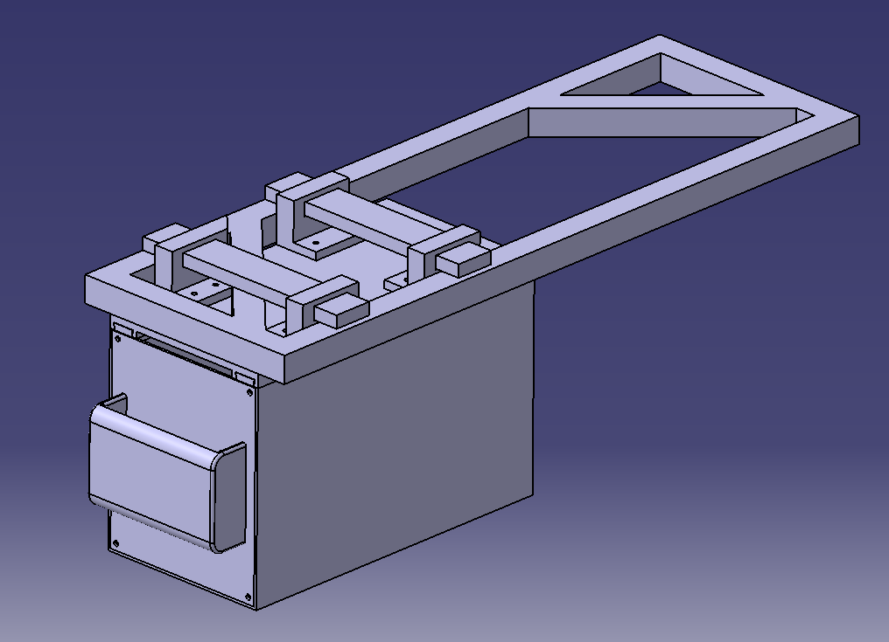
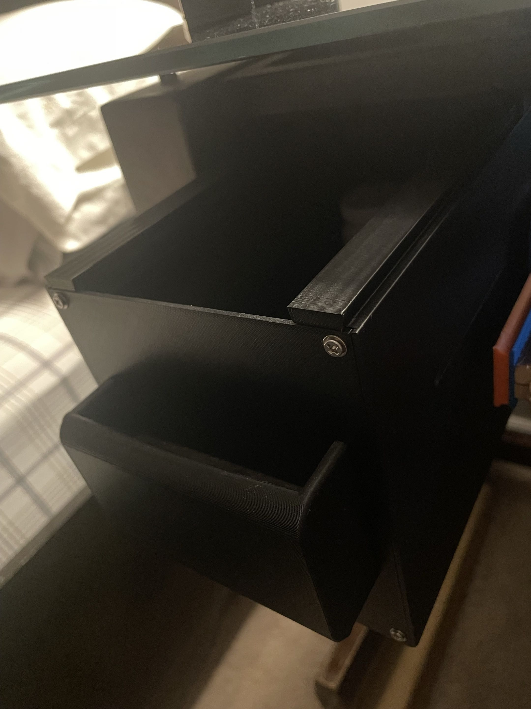

Undermount Desk Drawer
Overview
To combat workspace clutter and organize items like vitamin and mineral bottles, I designed and 3D-printed a custom undermount desk drawer. The design process involved measuring the available free space under my glass-top desk and perfectly replicating the existing metal stabilizing undermount in CATIA V5. I then built a sliding drawer assembly around this geometry to maximize storage efficiency without compromising legroom.
Key Design Highlights
- Reverse Engineering: Replicated the exact geometry of the desk's existing metal undermount in CATIA V5 to ensure a flush, secure fit for the custom sliding mechanism.
- Structural Optimization: Designed two custom top brackets strategically oriented during 3D printing so that the operational load acts perpendicular to the layer lines, maximizing tensile strength and preventing part failure.
- Volume Constraints: Engineered the entire drawer and bracket assembly to be fully printable within the build volume of a Bambu Lab P1S printer.
- Ergonomic Workspace: Created a seamless, hidden storage solution that neatens the desktop while keeping daily items easily accessible.
Technical Specifications
| CAD Software | CATIA V5 |
|---|---|
| Manufacturing Method | Fused Deposition Modeling (FDM) |
| Printer Used | Bambu Lab P1S |
| Mounting Strategy | Custom brackets attaching to the existing metal desk frame |
| Design Focus | Tensile strength optimization via print orientation |
Gallery

